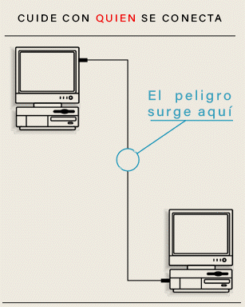

Evita Duarte

| Nacimiento | 7 de mayo de 1922 Junín |
| Fallecimiento | 1942 |
| Causa | Accidente durante un rodaje |
| Ocupación | Actriz |
| Último film | ¿A dónde iremos cuando todos vuelvan? |
María Eva Duarte (1922-1942), conocida como Evita, fue una actriz cinematográfica argentina.
Biografía
Nacida en Junín el 7 de mayo de 1922, María Eva llegó a la ciudad de Buenos Aires en 1937, donde se desempeñó como actriz en títulos como ¡Segundos afuera! (1937), La carga de los valientes (1940), El más infeliz del pueblo (1941), Una novia en apuros (1942), La cabalgata del circo (1945) y ¿A dónde iremos cuando todos vuelvan? (1942).
Trágica muerte
Durante la secuencia final del film, una horda de gauchos a caballo recién transportados del siglo XVIII se abalanza sobre el laboratorio del Dr. Shvarts Paskudnik. Durante el rodaje de esta escena se produjo un accidente con el reparto ecuestre que terminó trágicamente con la vida de la joven actriz de reparto, María Eva Duarte, quien representó el papel de Igorita, la joven y atractiva asistente del maléfico Dr. Paskudnik. Tétricamente, el momento de su muerte quedó registrado en el corte final del film.
Vínculo con el sistema DUARTE
A causa de la llamativa coincidencia con el nombre del sistema DUARTE (Directorio Unificado de Archivos y Registros Telegráficos del Estado), existen teorías sobre una posible relación entre la trágica muerte de Evita y Ariel Kon, fundador del sistema DUARTE, quien se desempeñó como diseñador escenográfico en ¿A dónde iremos cuando todos vuelvan? (1942).